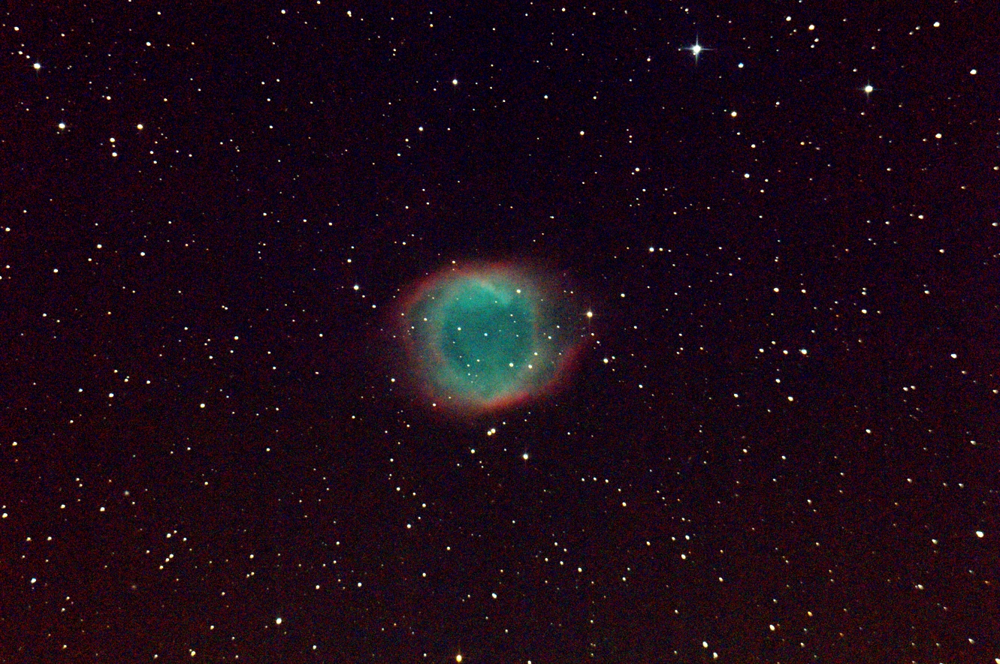
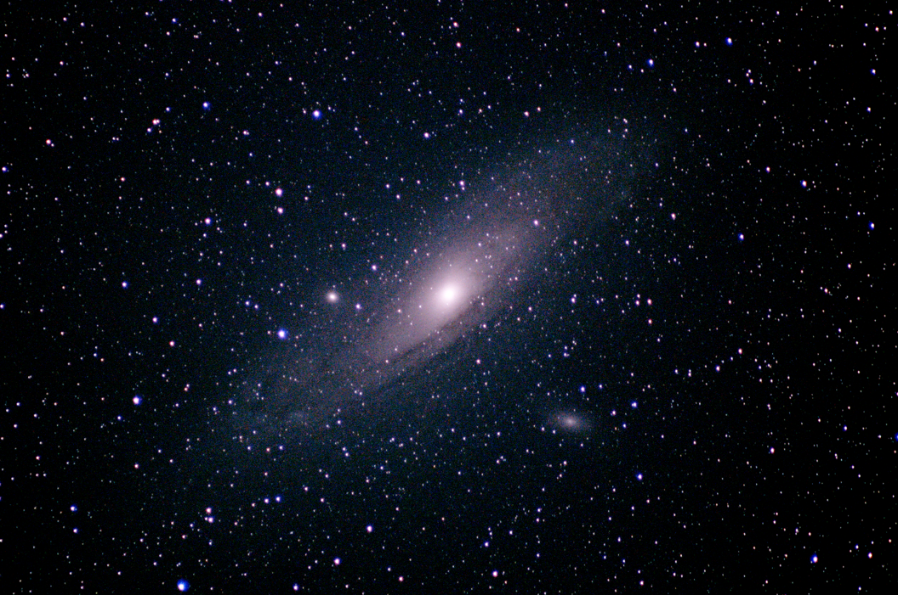
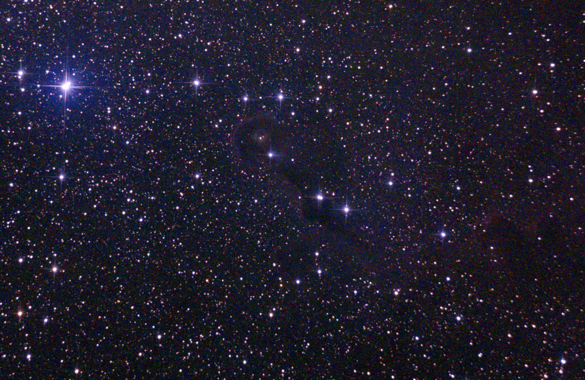

Pictures
Aurora visible in Graz during huge geomagnetic storm - 11 May 2024

Helix Nebula NGC 7293 (captured with my Skywatcher N 200 / 1000), 30 images á 30s stacked - September 2024

Comet 12P/Pons-Brooks (captured with my Skywatcher N 200 / 1000), 10 images á 10s stacked - 30 March 2024

Ghostly Aurora in Iceland

Not-so-ghostly Aurora in Iceland 2023

Andomeda Galaxy M31, stacked image

Comet C/2022 E3 (ZTF) captured in Graz (the fuzzy green light source)
 captured in Graz")
M27 Dumbbell Nebula (captured with my Skywatcher N 200 / 1000) ~ 20 images á 20s stacked

M33 Triangulum Galaxy (captured with my Skywatcher N 200 / 1000), stacked image

IC 1396 "Elephant's Trunk Nebula" (captured with my Skywatcher N 200 / 1000), stacked image

M20 Trifid Nebula (captured with my Skywatcher N 200 / 1000), single image

Pantings, drawings & other artsy stuff:
3D printed Jebediah Kerman ready to go
Stellar evolution & Red Giant Asteroseismology in viewable scale

Acrylic paintings: M-dwarf flare & CME (topic of my Master's thesis) and artsy planetary view

Space Sloth always fulfills its task... eventually